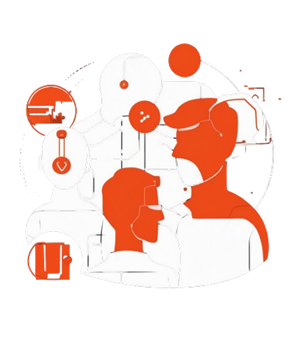

Scan authorized networks
Find Common Vulnerabilities and exploits


Fix Them Manually or with our AI playbook
Get Detailed Reports of our scans and fix suggestions

Identify and prioritize vulnerabilities effectively!
Scan authorized networks
Find Common Vulnerabilities and exploits
Fix Them Manually or with our AI playbook
Get Detailed Reports of our scans and fix suggestions